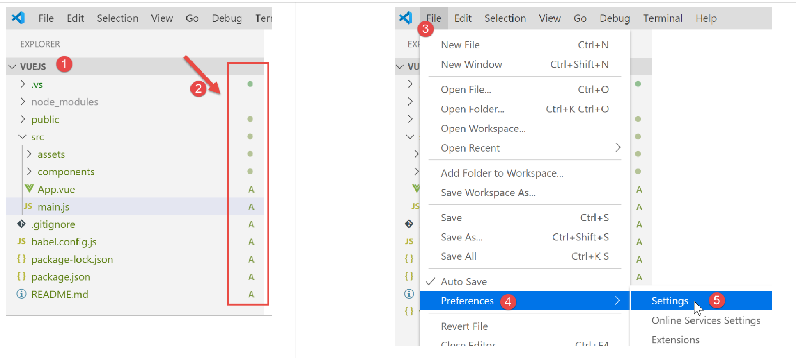

2. Setting up a development environment
We are using the work environment detailed in document [2]:
- Visual Studio Code (VSCode) for writing the JavaScript code;
- [node.js] to run them;
- [npm] to download and install the JavaScript libraries we will need;
We create a working environment in [VSCode]:

- in [1-5], we open an empty [vuejs] folder in [VSCode];

- In [8-10], we install the [@vue/cli] dependency, which will allow us to initialize a [vue.js] project. This dependency brings in a large number of packages (several hundred);
In the same terminal, we then type the command [vue create .], which asks to create a project named [vue.js] in the current directory (.):

- In [13], a series of questions begins to configure the project;

- Once all questions have been answered, new packages are downloaded and a project is generated in the current directory [14].
Let’s take a look at what was generated. The file [package.json] is as follows:
{
"name": "vuejs",
"version": "0.1.0",
"private": true,
"scripts": {
"serve": "vue-cli-service serve vuejs-20/main.js",
"build": "vue-cli-service build vuejs-20/main.js",
"lint": "vue-cli-service lint"
},
"dependencies": {
"axios": "^0.19.0",
"bootstrap": "^4.3.1",
"bootstrap-vue": "^2.0.2",
"core-js": "^2.6.5",
"vue": "^2.6.10",
"vue-router": "^3.1.3",
"vuex": "^3.1.1"
},
"devDependencies": {
"@vue/cli-plugin-babel": "^3.11.0",
"@vue/cli-plugin-eslint": "^3.11.0",
"@vue/cli-service": "^3.11.0",
"babel-eslint": "^10.0.1",
"eslint": "^5.16.0",
"eslint-plugin-vue": "^5.0.0",
"vue-template-compiler": "^2.6.10"
},
"eslintConfig": {
"root": true,
"env": {
"node": true
},
"extends": [
"plugin:vue/essential",
"eslint:recommended"
],
"rules": {},
"parserOptions": {
"parser": "babel-eslint"
}
},
"postcss": {
"plugins": {
"autoprefixer": {}
}
},
"browserslist": [
"> 1%",
"last 2 versions"
]
}
Comments
- lines 14–22: Among the dependencies required for development, we see references to the two tools [eslint, babel] already used in the previous two chapters. Added to these are plugins for these two tools intended for use within [vue.js];
- line 34: the [babel-eslint] package will perform the ES6 -> ES5 transpilation of the jS code;
- lines 5–9: three [npm] tasks have been created:
- [build]: used to build the compiled version version of the project, ready for production;
- [serve]: runs the project on a web server. This tool is used to perform tests during development. As with [webpack-dev-server], a change to the project’s source code automatically triggers the project’s recompilation and reloading by the web server;
- [lint]: used to analyze the jS code and generate reports. We will not use this tool here;
A [README.md] file was generated with the following content:
This file summarizes the commands to use for managing the project.
We know that in [VSCode], the tasks [npm] are available for execution:

- in [1-3], we run the command [serve], which will compile and then execute the project [4-5];
In URL [http://localhost:8080], we get the following page:

We will explain a little later what led to this page.
Let’s continue configuring our work environment:

- In [2] above, we see [git] indicators. [git] is a source code manager that allows you to manage successive versions of the source code and share them among developers. We are going to disable this tool for the project;
- In [3-5], we go to the project properties;

- In [9-10], we disable the use of [git] in the project;
We will write various tests to demonstrate how [vue.js] works. However, we don’t want to create a new project every time, because that would require generating a [node_modules] folder each time, and that folder is several hundred megabytes in size. Let’s go back to the [npm] tasks in the [package.json] file:
"scripts": {
"serve": "vue-cli-service serve vuejs-00/main.js",
"build": "vue-cli-service build vuejs-00/main.js",
"lint": "vue-cli-service lint"
},
- line 2: the [serve] command uses by default:
- the file [public/index.html];
- associated with the file [src/main.js];
On line 2, you can specify the project entry point for the [serve] command, for example:
"serve": "vue-cli-service serve vuejs-00/main.js",
Let's try:

- in [1], the folder [src] was renamed to [vuejs-00];
- in [2-3], the command [serve] has been modified;
- In [4-6], the project is executed;
We get the same result as before:

For our tests, we will proceed as follows:
- writing code in a [vuejs-xx] folder within the project;
- test this project using the command [vue-cli-service serve vuejs-xx/main.js] in the file [package.json];
When the development server is running, any modification to one of the project files triggers a recompilation. For this reason, we disable the [Auto Save] mode of [VSCode]. Indeed, we do not want a recompilation to occur every time characters are typed into one of the project files. We only want recompilation at certain times:

- in [2], the option [Auto Save] checkbox must not be selected;